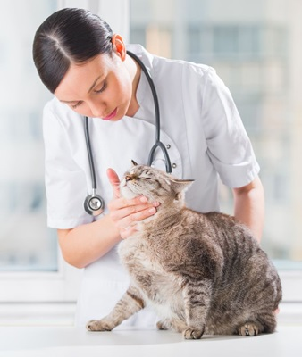
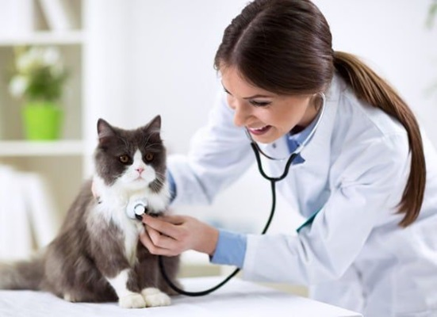
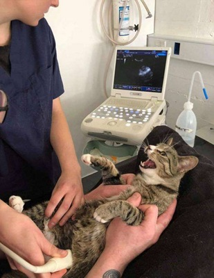

Cuidados esenciales para tu gato 🐱
Tener un gato como mascota es una experiencia maravillosa, pero también conlleva una gran responsabilidad. Para que tu gato esté saludable y feliz, es importante brindarle cuidados adecuados en cuanto a alimentación, higiene, ejercicio, y especialmente atención veterinaria. A continuación, te explicamos los cuidados fundamentales que debes tener en cuenta para garantizar el bienestar de tu gato.

1. Visitas regulares al veterinario
Llevar a tu gato al veterinario de manera regular es esencial para prevenir enfermedades y mantenerlo saludable. Las visitas al veterinario deben comenzar cuando el gato es un gatito, con las primeras vacunas y chequeos generales. A medida que tu gato crece, las visitas anuales o semestrales al veterinario son recomendadas para asegurarse de que esté al día con sus vacunas, revisarlo por parásitos y detectar cualquier signo temprano de problemas de salud.
Además de las visitas preventivas, es importante llevarlo al veterinario si notas cambios en su comportamiento, como pérdida de apetito, letargo, cambios en sus hábitos de baño, o cualquier signo de dolor o incomodidad. La atención temprana puede prevenir problemas graves y mejorar la calidad de vida de tu gato.

2. Alimentación adecuada
Una buena alimentación es fundamental para la salud de tu gato. Asegúrate de proporcionarle una dieta balanceada y adecuada a su edad, peso y necesidades específicas. Los gatos son carnívoros estrictos, por lo que su alimentación debe estar basada principalmente en proteínas animales de alta calidad. Consulta con tu veterinario sobre la mejor opción de comida, ya sea enlatada, seca o una mezcla de ambas.
También es importante controlar las cantidades para evitar la obesidad, un problema común en los gatos domésticos. No olvides que siempre debe tener acceso a agua fresca y limpia para mantenerse bien hidratado.
3. Higiene y cuidado del pelaje
Los gatos son muy limpios por naturaleza, pero es importante ayudarlos a mantener su higiene. Cepillar el pelaje de tu gato regularmente ayuda a evitar la acumulación de pelo muerto y reduce la formación de bolas de pelo, especialmente en razas de gatos de pelo largo. Si tu gato es de pelo corto, un cepillado una vez a la semana puede ser suficiente. Los gatos de pelo largo pueden necesitar un cepillado diario para evitar enredos.
Además, no olvides cuidar de sus uñas. Si no tiene acceso al exterior para desgastarlas, es necesario cortarlas regularmente para evitar que se lastime o se quede atrapado en algo. Revisa también sus orejas, ojos y dientes con regularidad, ya que estos pueden acumular suciedad o desarrollar infecciones.

4. Control de parásitos
Los parásitos internos y externos, como pulgas, garrapatas y lombrices, son comunes en los gatos. Es fundamental seguir un plan de prevención adecuado con productos recomendados por tu veterinario. Algunos productos ayudan a protegerlos contra pulgas, garrapatas y parásitos intestinales. Pregunta a tu veterinario cuál es el mejor tratamiento para tu gato y asegúrate de aplicarlo de manera constante según las indicaciones.
5. Ejercicio y estimulación mental
Los gatos, aunque en su mayoría son independientes, también necesitan ejercicio y estimulación mental. Jugar con tu gato no solo lo mantiene en forma, sino que también fortalece el vínculo entre ambos. Proporciónale juguetes interactivos, como pelotas, ratones de juguete o cañas de pescar, para estimular su instinto cazador. También puedes proporcionarle rascadores o árboles para gatos, que le ayudarán a mantenerse activo y prevenir el aburrimiento.
6. Esterilización y control de la reproducción
La esterilización o castración es una parte importante del cuidado de tu gato, tanto para su salud como para el control de la población felina. Los gatos no esterilizados pueden desarrollar problemas de salud, como infecciones o cáncer en órganos reproductivos, y la esterilización ayuda a prevenir estos riesgos. Además, reduce el comportamiento de marcaje territorial y la necesidad de salir a buscar pareja.

7. Protegerlo de los peligros del exterior
Si bien algunos gatos disfrutan de salir al exterior, es importante ser consciente de los riesgos que esto conlleva, como el tráfico, otros animales o enfermedades. Si decides permitir que tu gato salga al exterior, asegúrate de que tenga un espacio seguro donde pueda explorar sin peligros. Otra opción es tenerlo en un entorno interior seguro y estimulante, donde se pueda desarrollar y mantener activo sin correr riesgos.
Conclusión
Cuidar de un gato requiere tiempo, esfuerzo y dedicación, pero los beneficios de tener un gato saludable y feliz valen la pena. La clave para asegurarte de que tu gato se mantenga en buena salud es brindarle un cuidado preventivo adecuado, llevarlo al veterinario regularmente, y proporcionarle un ambiente seguro y estimulante. Al seguir estos cuidados, puedes disfrutar de una larga y feliz vida junto a tu compañero felino.